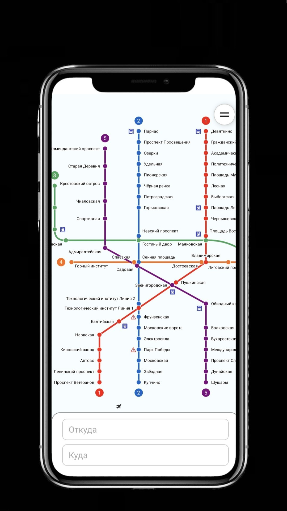
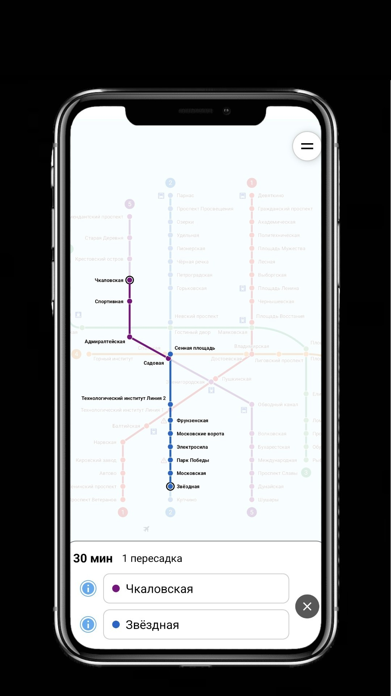
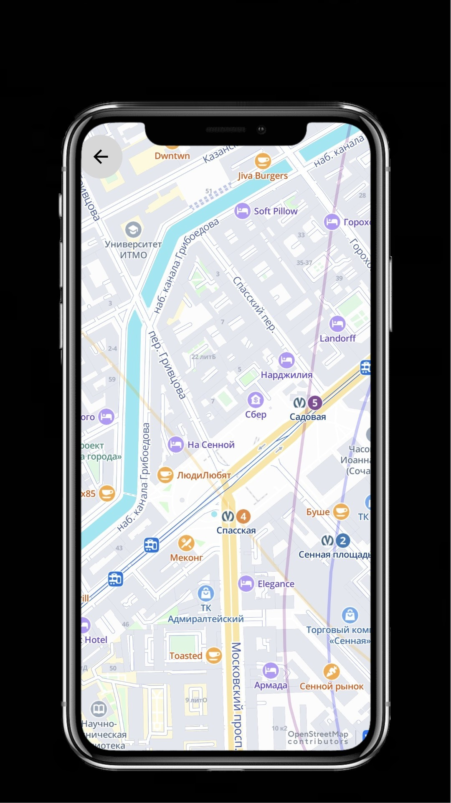
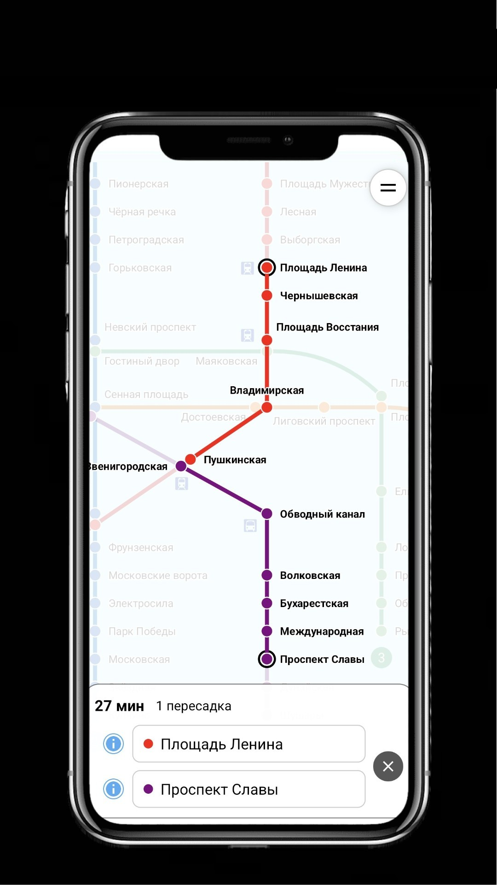

Санкт-Петербург
Карта метро
Умная интерактивная карта метро, которая работает офлайн. Маршруты, станции и достопримечательности — всё необходимое для поездок по Петербургу в вашем телефоне.
Полностью бесплатно · Без интернета · 10 МБ
Всё метро Петербурга в вашем кармане
Интерактивная схема
Чёткая, масштабируемая карта с цветными линиями, пересадками и вокзалами.
Построение маршрутов
Оптимальный путь, время в пути и количество пересадок.
Всё о станциях
Время работы, выходы, пересадки и полезная информация о станциях.
Что рядом
Достопримечательности Петербурга рядом со станциями метро.
Удобный поиск
Мгновенно находите нужную станцию по названию.
Актуальная информация
Важная информация о работе станций отображается прямо на карте.
Приложение в действии
Просто. Быстро. Удобно.




Готовы исследовать Петербург?
Установите карту метро СПб и путешествуйте по городу удобнее.